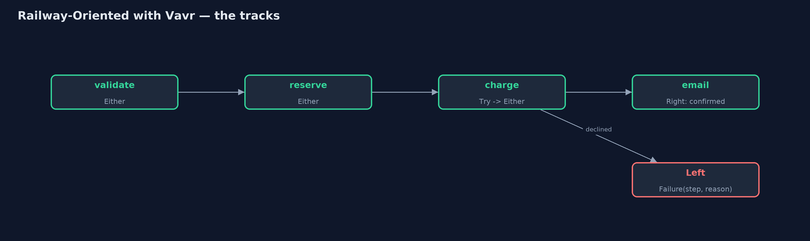
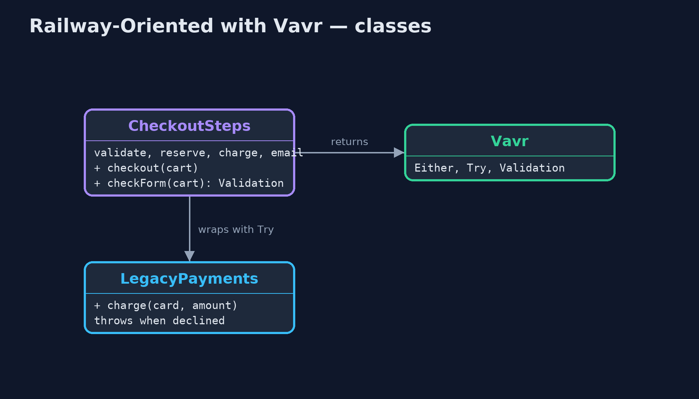
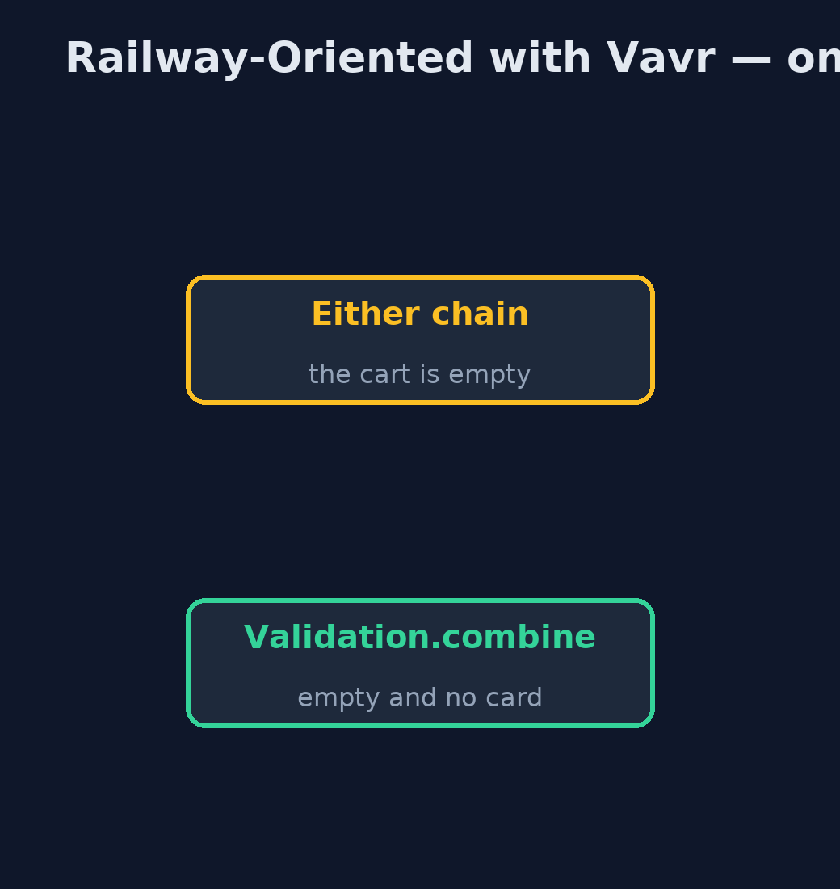
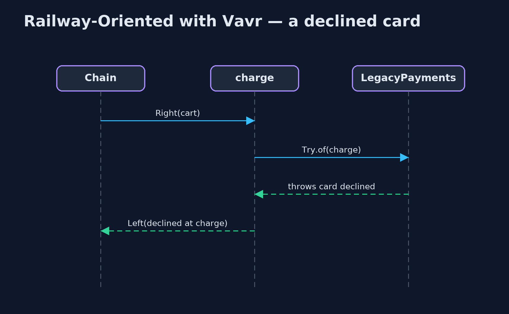

Railway-Oriented Programming with Vavr Pattern
src/main/java/com/jk/explore/railwayvavr/
├── Cart.java A shopping cart, and how far through checkout it has got
├── CheckoutSteps.java The checkout steps
├── Failure.java Why checkout failed, and at which step
├── LegacyPayments.java The payment company's client library: it reports a declined card by throwing, as much Java code does
└── VavrRailwayDemo.java The five acts, with Vavr's Either, Try and ValidationBuild the checkout railway with Vavr: Either for the two tracks, Try to move a throwing library onto them, and Validation to collect every problem in a form instead of stopping at the first.
This is the library version of Railway-Oriented Programming. The plain Java version, a separate project in this category, writes its own sealed Result type. Here Vavr, the best-known functional library for Java, provides the types. Either<Failure, Cart> is the railway: Left is the failure track, Right the success track, and flatMap runs the next step only on the success track.
Vavr adds two things the plain version did not have. Try wraps code that throws, such as a payment company's client library, and toEither() puts its exception onto the failure track. And Validation checks several fields independently and collects every problem, which the plain version named as the railway's limit.
The idea in everyday terms
Think of an airport baggage belt with inspection points: a rejected bag is pushed onto a side belt that runs to the end. That is Either. Try is a station that catches a bag falling off the belt and puts it on the side belt instead of on the floor. Validation is a customs desk that checks every item in a bag and lists all the problems at once.
The scenario
The online store's checkout has four steps: check the cart, reserve stock, charge the card, email the confirmation. The payment company's client library reports a declined card by throwing an exception, and a controller that forgot to catch it showed customers an internal server error.
Run
Nothing to install beyond a Java 21 JDK: Vavr is a library, downloaded by Gradle.
./gradlew runThe demo tells the story in 5 acts, each printing exact numbers that the tests check:
| Act | What it shows |
|---|---|
| 1. A throwing library | The payment library throws "card declined"; nothing makes the caller handle it. |
| 2. Either | Each step returns Either<Failure, Cart>, chained with flatMap: 2 mugs and a good card are confirmed, and all four steps ran. |
| 3. Skipping, and Try | An empty cart fails at validate and skips the rest; a declined card fails at charge, because Try.of(...).toEither() caught the library's exception. |
| 4. map and orElse | 20% tax with map gives 23.98 for 2 mugs; an out-of-stock lamp becomes a back-order with orElse. |
| 5. Validation | An empty cart with no card: the Either chain reports only the empty cart; Validation.combine reports both problems. |
Test
./gradlew test1 tests in DemoRunsTest. Every number the demo prints is asserted, and nothing depends on the clock, so every run gives the same result.
What the simulation got right, and what it left out
The plain Java version got the idea right: steps return success or failure, flatMap skips the rest after the first failure, map lifts plain steps, and there is a way back; and it named the limit, that a chain reports only the first problem. What it left out is a standard library for it. Vavr's Either is the railway, used across many codebases. Try brings code that throws onto the railway. And Validation removes the limit the plain version admitted: an empty cart with no card now reports both problems at once.
Technologies and versions
| Technology | Version | Used for |
|---|---|---|
| Java | 21 | the code (toolchain set in build.gradle) |
| Gradle | 9.2.1 (wrapper) | build and run, nothing to install |
| JUnit | 5.10.2 | the tests |
| Vavr | 1.0.1 | Either, Try and Validation |
| videokit | repository tool | the narrated video and animation: Piper en_US-amy-medium, speed 0.8, longer pauses (the approved amy-slow voice) |
Learning Material
| Document | What it is for |
|---|---|
| Dependencies | what the framework and infrastructure are, and why they are here |
| Problem statement | the situation and what the project must show |
| Prerequisites | what you need to know first |
| Railway-Oriented Programming with Vavr, explained | the acts in prose |
| Session guide | a one-hour lesson with exercises |
| Animated walkthrough | the acts step by step, narrated |
| Spec | what this project must be true of |
The pattern in one picture
Right carries on; Left runs to the end.

Where each piece sits
Vavr supplies the tracks.

How the data moves
Either stops; Validation collects.

Who calls whom, in order
The exception becomes a Left.

Video
video/railway-oriented-with-vavr-pattern-explained.mp4 (with .m4a audio and .srt subtitles) is built by video/build_video.sh. Rendered media is not committed.
What it costs
- A library to learn and carry. Either, Try and Validation each have their own methods.
- Left and Right. Which side is failure is a convention, easy to mix up at first.
- Two tools for two jobs. Either stops at the first failure; Validation collects them all; choose on purpose.
When this is too much
For one or two steps, an if statement is clearer than a library. Vavr pays off in code with many steps that can fail for business reasons, or many fields to check.
Where you have already met this
- Vavr's
Either,TryandValidationin Java codebases. - Kotlin's
Resultand Arrow'sEither. - Scala's
EitherandTry, which Vavr is modelled on.
Where this sits
This project is in functional-design-patterns. It is the library version of the plain Java Railway-Oriented Programming project in the same category, which is left unchanged.